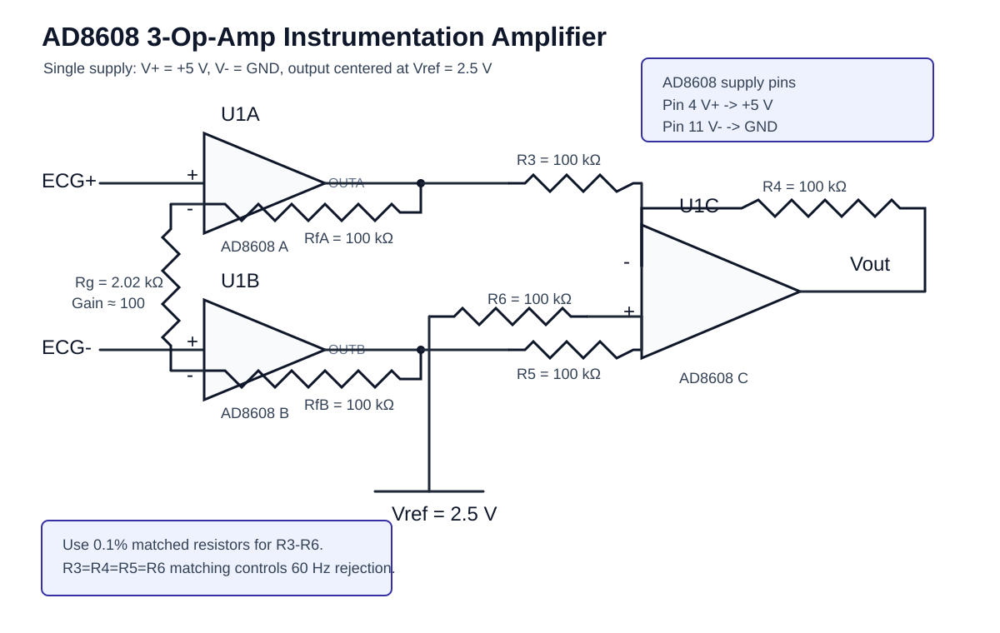

프로젝트 소개
AD8608 기반 ECG 측정 회로, nRF54L15 BLE 전송, 브라우저 실시간 GUI를 하나로 연결한 실험용 시스템입니다.
AD8608 Front-End
ECG 전극 신호를 ADC 입력 범위에 맞게 증폭하고 기준전압을 중심으로 배치합니다.
nRF54L15 BLE
ADC sample을 Nordic UART Service 또는 custom Notify characteristic으로 노트북에 전송합니다.
Live Plot
Web Bluetooth로 데이터를 받아 전압 변환, 필터링, CSV 기록, rough HR 추정을 수행합니다.
실시간 ECG GUI 데모
아래 데모는 같은 repository 안의 실제 GUI입니다. BLE 장치가 없어도 `시뮬레이터 시작`을 누르면 ECG-like waveform, 60 Hz noise, baseline wander가 포함된 샘플을 실시간으로 확인할 수 있습니다.
회로 설명
AD8608 기반 analog front-end는 작은 ECG differential signal을 ADC가 읽을 수 있는 범위로 옮기는 역할을 합니다. 실제 실험에서는 gain보다 먼저 포화 여부, 기준전압 안정성, 전극 접촉, 케이블 노이즈, RLD/DRL 적용 여부를 확인합니다.

측정 관점의 체크포인트
ADC 입력이 rail에 붙으면 필터로 복구할 수 없기 때문에 AD8608 출력 범위와 ADC center를 먼저 맞춥니다. raw input panel에서 QRS 후보가 보이고 baseline 흔들림이 과하지 않을 때 디지털 필터링 단계로 넘어가는 흐름을 권장합니다.
필터링 설명
GUI 기본 필터는 ECG 모니터링용 시작점으로 잡았습니다. 실시간 IIR biquad를 사용하고, 사용자가 sampling rate와 cutoff를 바꿔가며 비교할 수 있습니다.
0.5-1 Hz
호흡, 전극 움직임, baseline wander를 줄입니다. 저주파 정보를 보려면 너무 높이지 않습니다.
60 Hz
전원 노이즈를 줄입니다. 회로와 배선에서 노이즈를 먼저 줄인 뒤 보조적으로 사용합니다.
40 Hz
고주파 잡음을 줄이고 ECG 형태를 보기 쉽게 합니다. QRS가 지나치게 둔해지는지도 확인합니다.
DC/reference removal -> HPF 0.5 Hz -> Notch 60 Hz -> LPF 40 Hz -> Live plot
실험 결과
오실로스코프/CSV로 저장한 ECG 데이터를 오프라인 필터 도구로 처리한 결과입니다. Pages에는 대표 plot을 보여주고, repository에는 실시간 GUI와 오프라인 처리 코드가 함께 들어 있습니다.
코드 다운로드
GitHub에서 전체 코드를 내려받거나, repository를 clone해서 GUI와 필터 도구를 바로 실행할 수 있습니다.
git clone https://github.com/aewoonge-creator/ecg-ble-live-plot.git cd ecg-ble-live-plot python serve_gui.py